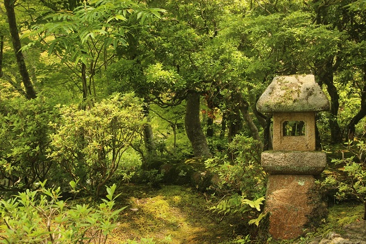

コロナ渦によるお祭り開催について2021,12,30
こちらの文章は仮のテキストです。こちらの文章は仮のテキストです。こちらの文章は仮のテキストです。こちらの文章は仮のテキストです。こちらの文章は仮のテキストです。こちらの文章は仮のテキストです。こちらの文章は仮のテキストです。こちらの文章は仮のテキストです。こちらの文章は仮のテキストです。こちらの文章は仮のテキストです。こちらの文章は仮のテキストです。こちらの文章は仮のテキストです。こちらの文章は仮のテキストです。こちらの文章は仮のテキストです。こちらの文章は仮のテキストです。こちらの文章は仮のテキストです。